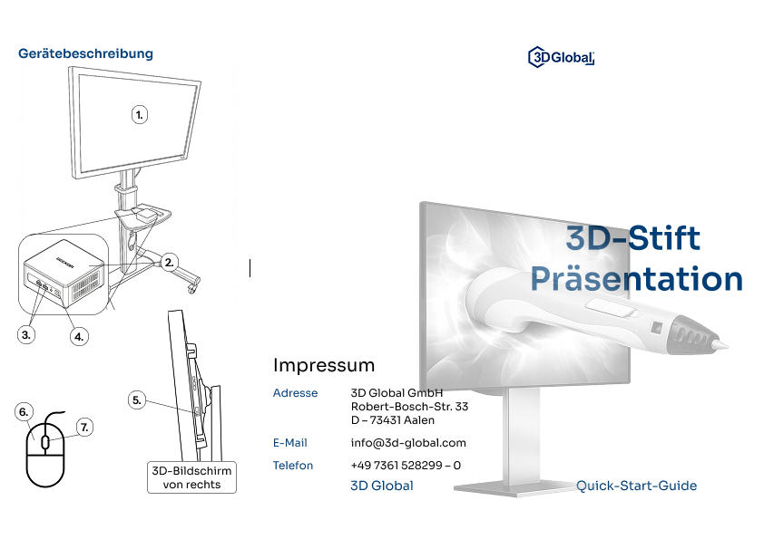
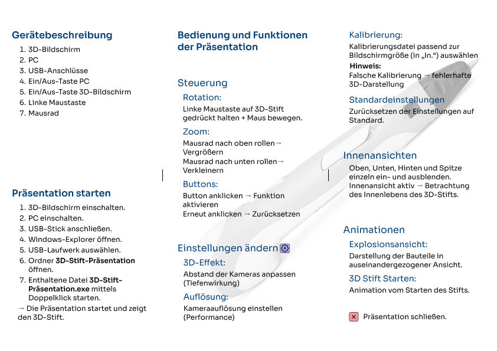

Portfolio. 2026
Nico Ranellucci
UX/ UI/ Information Designer
Erfahrung
Ausbildung
Skills
Interests
UX/ UI Designer
DZR
2025
Ausbildung
Hochschule Aalen
Information Design
2022 - laufend
Hochschule Aalen
User Experience
2020 - 2022
Skills
Digital
Figma, Office, Adobe, Axure, Blender, CAD
Sprache
Deutsch, Englisch
Keys
Nutzerzentriert, elegant, ästhetisch-pragmatisch, teamorientiert, UX-Research, Prototyping, Interaction Design, neugierig, vielseitig
Interests
DLRG
Rettungsschwimmer Silber
American Football
QB
Fußball
ZM
Andere
Fitness, Kochen, Lesen, Gaming
Arbeitsproben
Tree's and more
Dieses Projekt entstand aus eigenem Antrieb und diente als Experimentierraum zur Erforschung alternativer Interaktionsformen, insbesondere des horizontalen Scrollens. Mich interessiert dabei vor allem, wie sich neue Navigations- und Bewegungsmuster entwickeln lassen, die sich trotz ihrer Ungewohntheit intuitiv und selbstverständlich anfühlen.
Lucha Libre
Auch dieses Projekt entstand aus eigenem Antrieb und ist stärker im Illustration Design verortet als in einem klassischen UX-Kontext. Ziel war es, visuell zu experimentieren und gestalterische Prinzipien jenseits klarer funktionaler Anforderungen zu erkunden. Besonderes Augenmerk lag auf horizontalem Scrollen, da ich diese Interaktionsform als ästhetisch reizvoll empfinde und sie zugleich stärker mit Bildformaten arbeitet, wie sie aus der Kamera- und Filmästhetik bekannt sind. Dadurch entsteht eine eher erzählerische, fließende Wahrnehmung des Inhalts.
Earth, Wind and Fire
Die Idee entstand aus einem Pinterest-Post, der ein reduziertes Vier-Punkte-Menü zeigte. Daraus entwickelte sich der Gedanke, die Navigation konsequent über Symbole zu organisieren und visuell zu verknüpfen. Aus reiner Neugier und Freude am Experiment habe ich mich anschließend daran gesetzt, eine kleine Animation für das Aufklappen des Menüs zu gestalten. Ziel war es, dem ansonsten sehr reduzierten Interface eine subtile Dynamik zu verleihen, ohne die Ruhe des Gesamtkonzepts zu stören.
Just Read
Just Read ist eine Tablet-App, die ich in meiner Freizeit als eigenständiges Projekt entwickelt habe. Ausgangspunkt war mein persönlicher Wunsch, wieder bewusster und häufiger zu lesen. Lesen bedeutet für mich Ruhe, Entschleunigung und eine gewisse Nähe zur Natur. Qualitäten, die im digitalen Alltag zunehmend verloren gehen.
Quick-Start-Guide
Mein neuestes Studioprojekt. Hintergrund war eine interaktive Präsentation eines 3D-Stifts auf einem 3D-Bildschirm. Das Ziel war ein nutzerzentriertes Informationsprodukt zu erstellen.

